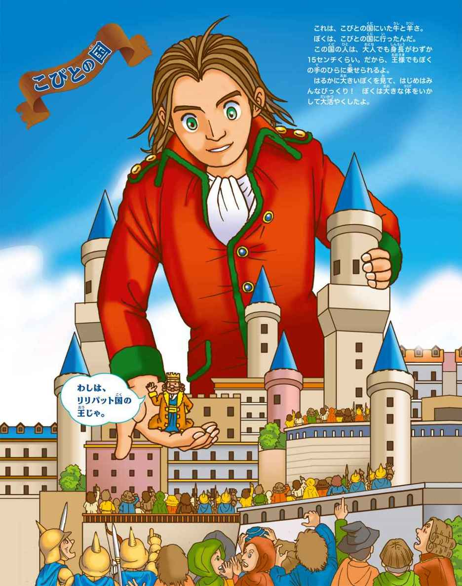
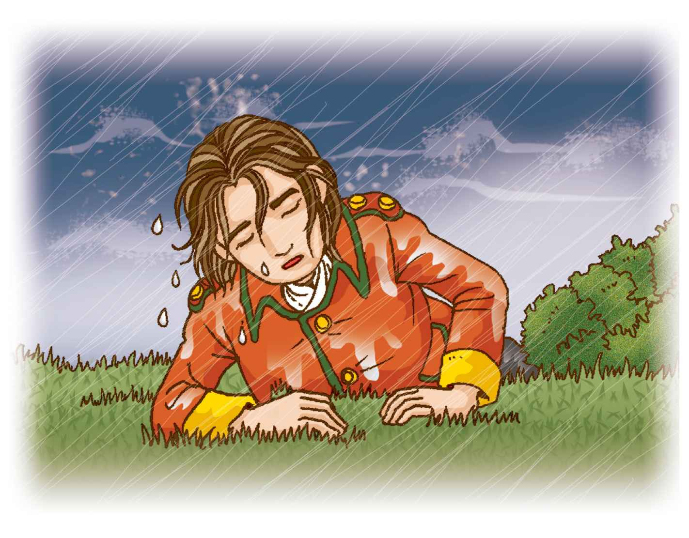
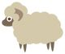

| １０歳までに読みたい世界名作4 ガリバー旅行記 | |
| ジョナサン・スウィフト | |
| (2014) | |

ガリバー旅行記
もくじ
こびとの国
プロローグ 冒険大すき
１ 船はちんぼつ、ボートは転ぷく
２ もぞもぞ、はいあがるこびとたち
３ いたい、いたい、いたい
４ 食事が終われば、ハッピーダンス
５ ここは、都のど真ん中
６ リリパット国の大きな山人間
７ ゆでたまごのむきかた
８ てきの軍かんをぶんどる
９ えいゆう、地におちる
10 ガリバー消防隊
11 こびとの国よ、さようなら
巨人の国
１ 巨大な化け物
２ 巨人と出会った麦畑
３ 大きな大きなネズミ
４ 見世物ガリバー
５ 王宮のくらし
６ 巨人の国の小さい人間
７ 空をとぶ家
エピローグ いろんな国があった
物語と原作者について編訳／芝田勝茂
なぜ、今、世界名作？監修／横山洋子
プロローグ 冒険大すき
ぼくは、ガリバー。
イギリス人だ。
子どものとき、友だちがぼくにきいた。
「ガリバー、大きくなったら何になる？」
「ぼくは船に乗って冒険の旅をするんだ！」
そのときの言葉どおり、ぼくは医者になり、船に乗りこんだ。
船の旅は、最高に楽しかった。
さいしょの航海（＊１）から帰ると、ぼくはロンドン（＊２）で病院を開いた。そして、メアリーというすてきな女性とけっこんした。
「わたしたち、いつまでもなかよく、楽しくくらしましょうね。」
「うん。でも、ぼくが旅に出ることもゆるしてね、メアリー。」
「いいわよ、たまには」メアリーはほんとうにやさしいおくさんだ。
「あのね、メアリー。今度、また船に乗ることにしたんだ。」
「ええっ！ けっこんしたばかりなのに。」
「ごめん。でも一度航海すると、たっぷりお金をかせぐことができるからね。ぼくを行かせておくれ、メアリー！」
「わかったわ。でも、なるべく早く帰ってきてね。」
それから、ぼくは何度も世界を回った。
「メアリー、今度、また海に出るよ。」
「けっこんして八年もたつのよ。いいかげんに旅はやめて、落ちついてちょうだい！ あなたの身に何かあったら......。」
「だいじょうぶだよ。心配しないで。」
メアリーはいい顔をしないけど、ぼくはまた船に乗る。
へ先（＊３）に立つと、広々とした水平線が見える。
ぼくは、むれとぶカモメに手をふってあいさつし、しおのかおりをむねいっぱいにすいこむ。あの、水平線の向こうに行くんだ。
今度は、どんな世界が待っているだろう。
さあ、きみもいっしょにおいでよ！
ガリバーの冒険、始まり、始まり！
＊１ 航海...船で海をわたること。
＊２ ロンドン...イギリスの首都。
＊３ へ先...船首。船の前の部分。

「うわっ、ぶつかる。」
ガシィーーーン。
船は岩にぶつかり、真っ二つにわれてしまった。船長がさけんだ。
「みんな、ボートに乗れ！ この船は、すぐにちんぼつするぞ！」
ぼくらは必死で船の上から海に向かって、ボートを下ろす。
「全員、乗ったかあ。」
「乗りました！」
みんなで、岸を目指して一生けん命こいだ。でも、またしても、はげしいとっ風がふいてきたんだ。
「うわっ！」
今度は、あっというまにボートが転ぷく（＊３）！ みんな、ボートから投げだされてしまった。
ぼくは海の中で、もがいた。ほかのみんながどうなったかなんて、考えるよゆうもない。必死で泳ぐ。でも、つかれきって、体が思うように動かない。
「もうだめだ。これ以上泳ぐのはむり！」
そう思ったとき、海底に足が着いた。
「おお、あさいぞ！ 陸地のそばだ！」
暗やみの中に、岸がぼうっとうかんでいる。
「あそこを目指そう！」
力をふりしぼり、岸にたどりついた。
「助かった！......でも、ここはどこだろう。」
つかれのせいで、何も考えられない。
そして、もうれつにねむくなった。
ありがたいことに、地面にはやわらかい草が生えていて、空気はあたたかく、ぼくはそのまま草の上にどさっとたおれこみ、あっというまにねむってしまった。

２もぞもぞ、はいあがるこびとたち
目がさめると、すっかり夜が明けていた。
空が見える。青空だ。
「起きなくちゃ......。」
体を起こそうとした。ところが、身動きができない。
「あれ、どうしたんだろう。」
あおむけにねていたんだけど、起きあがろうとしても、両手も両足もびくともしない。
頭をあげようとしたら......。
「いててっ！」
頭も動かないんだ！
「ぎゃっ。しばりつけられているじゃないか！」
なんと、ぼくの両手も両足も、かみの毛も、どう体も、細いひものようなもので、ぎゅうぎゅうにしばりつけられていた。
横目で見てみると、そのひもは、地面に打ちつけられた、くいにつながっている。
がんじがらめにされているんだ。
いったい、どうしたことだろう。
ひもでしばられている、ということは、だれかがしばった、ということだ。じゃあ、いったいだれが、なんのために、ぼくを地面にしばりつける？ 何がなんだかわからない。
しばらくすると、左足のあたりがもぞもぞしてきた。
「ん？」
何か、虫のような生き物が、ぼくの左足に上ってくる。
その生き物は、左足からむねの上、それからあごの近くにやってきた。
目を必死で下によせてみる。
「うわっ。な、なんだこれは！」
おどろいたことに、ぼくの体の上に人間がいるじゃないか！
そのせたけは、十五センチにも足りないくらいだ。
「これが、ひょっとして、昔話とか童話に出てくる、こびとなのか。」
いや、まさか。
あれは、お話の中のことだ。
ほんとに、そんなこびとが世の中にいるわけがない。でも、どう見ても、ぼくの体の上に乗っているのは、小さいけれど、本物の人間だ。こびとが、じっさいにいたんだ！
大発見だ！
でも、そんな感動にいつまでもひたっていられない。このこびとは、けっこうきけんなんだ。むねの上で、歩きまわっているこびとの手には弓がにぎられ、せなかには矢のつつをしょっている。
鉄ぽうは持っていないけど、このかっこうは、どう見ても兵隊だ。
するどい目をして、ぼくの体のあちこちを調べている。そのうち、次々、同じように弓矢を持ったこびとが、ぞろぞろと体の上に、はいあがってくるのが見えた。
「うわわっ！」
ぼくは思わずさけんで、体をゆすった。
そのとたん、四十人ほどのこびとは、
「ひゃー！」「うわー！」と悲鳴を上げて、ばらばらとぼくの体から落っこちた。
しばらくして、今度は、べつのこびとがやってきた。兵隊のかっこうではなくて、なんだか、りっぱな服を着ている。きっと、こびとの中ではえらい人にちがいない。
そのこびとは、ぼくの顔の近くまで来ると、何やら大きな声でさけんだ。といっても、そんなに大きな声ではないんだけどね。こびとにしてみれば、すごく大きな声なんじゃないのかな。でも何をいってるのか、わからない。
「そうか。この小さな人間が使っている言葉は、ぼくらの言葉とはちがうんだ。」
考えてみれば、当たり前だった。
こびとは、ぼくに「おとなしくしろ！」といったのかな。
「あのねえ、そんなこといっても、ぼくは動けないんだぞ！」
そういったら、こびとは頭をかかえるみたいに、耳を必死でおさえた。
そうか、ぼくの声が大きすぎるんだ。こびとにとっては、ぼくの声は、ライオンのほえる声よりも大きいんだろう。
３いたい、いたい、いたい
このままではどうしようもないので、ぼくはなんとか体を動かそうとした。すると、左手のひもがぷつんと切れた。
「えいっ！」
今度は、頭の左側をむすんだひもが少しゆるんだ。これで、ちょっとは、まわりを見ることができる。
「うわあ......。なんてことだ！」
ぼくの体をしばりつけているひもは、くぎのように小さなくいにむすばれ、地面にしっかりと打ちつけられている。その数は何百本。ひもといっても、細いけれどしっかりしたロープなんだ。
ぼくは、はらが立ってきた。いったいどうして、こんなひどい目にあわなきゃならないんだ。何も悪いことなんかしていないのに。
ぼくは自由になった左手を動かして、上に乗っているこびとをつかまえようとした。そのときだった。
まわりにいた、何百人もの兵隊が、ぼくに向かっていっせいに弓を引いたのだ。
ビュン、ビュン、ビュン......。
力いっぱいいられた矢は、先がとがっていて、まるで、はりのようだ。それが、何百本も一度に、ぼくに向かってとんでくる。
プス、プス、プス......。
「いたたたた！」
たくさんの矢が体につきささる。そのいたいこと！
「やめてくれえ。」
矢は、次から次にとんでくる。
ものすごいこうげき力だ。何十本ものとげが、一度にささったみたいだ。
「いててて。こんなのが目に当たったら、目がつぶれてしまう。」
弓の部隊が引きさがると、今度は小さなやりを持った兵隊が、ぼくのわきばらをつっつきにきた。でも、これはだいじょうぶ。ぼくのジャケットは、かわでできていたから。
でも、次の弓の部隊が、またしても弓をかまえて、ぼくをねらっている。弓のこうげきだけは、たまらない。
「なんとかしなくちゃ！」
そりゃあ、ぼくだって、ここであばれて、この小さい連中をふみつぶしたり、投げつけたりすれば勝てるだろう。でも今のところぼくの体は、ひもでしばりつけられてしまっているのだ。
「わかった、わかった、こうさん！」
ここは、おとなしくするしかない。夜になってから、にげればいいや。
「ていこうしないから！ 弓矢こうげきはやめて！」
必死に左手でおねがいしてみた。
すると、リーダーらしいこびとが手をあげた。こうげきが止まった。みんな、矢を下におろして、たいきする。
「ふう......。助かった！」
４食事が終われば、ハッピーダンス
そうこうするうちに、ぼくを見物に来るこびとたちが、ますますふえていく。
（そりゃあ、こんな大きな人間、見たこともないんだろう。だったら、めずらしいからみんな見に来るよねえ。）
そのうち、何人かでぼくの右の耳のあたりに、五十センチほどの高さの台を作った。その上に一人の男が乗り、何かさけんでいる。
ぼくは、左手を口に持っていき、そいつに、食べるしぐさをした。
「おなかがすいた！ 何か食べるものをください！」
この身ぶりをすれば、世界中、どこへ行っても通じるんだ。みんな、こびとの言葉で話しあっている。ぼくのやったことを、くりかえしているこびともいる。
おお、通じたみたいだ！
台にのってさけんでいたこびとが、ぼくに向かって、うなずいた。その顔は、ちょっとやさしそうだった。
「まかせなさい」と、いっているみたいだ。
しばらくして、ぼくの体に、はしごがかけられ、こびとたちが、手に手に、肉やパンの入ったかごを持って、上ってきた。そして、その肉やパンを、ぼくの口めがけてほうりこみだした。
ぱくり。
ぱくり。
むしゃむしゃ。
「おいしいー。」
ごっくん。
ぱくり。
むしゃむしゃ。
あっというまに、食べてしまった。
だって、どれもこれも小さかったからね。
パンときたら、ウズラのたまごよりも小さく、あとからあとから運んでくれる肉も、ほんとに小さな、豆つぶみたいなものなんだ。
ぱくぱく、もぐもぐ。
でも、おなかがすいているせいか、みんなおいしい。運ばれてきたパンや肉は全部、ぼくのおなかの中に消えてしまった。
こびとたちは、そんなぼくの食べっぷりを目を丸くして見ている。
「今度は飲み物がほしいなあ！」
左手で、飲むかっこうをした。
これも、うまくつたわった。
こびとにとって、おそらく、いちばん大きな酒だるが、運ばれてきた。
「うーん、こんなに小さいのかあ......。」
ぼくにしてみればせいぜい、小さなグラスくらいのたるだ。
ぼくの顔にはしごをかけて、みんなでよいしょ、よいしょと、たるを口元に持ってきた。そして、たるをかたむけると、ぼくの口の中に、ドボドボと、何かのえき体が注ぎこまれた。
ごくん。
「うまいっ！」
イギリスのワインよりもおいしい。
でもこれもまた、たったの一口で、なくなってしまった。
ぼくがたるの中のえき体を飲みほすと、おかしなことが始まった。
見ている連中が、みんな、ぼくの体の上でおどりだしたんだ。
（人間はだれでもみんな、食べたり飲んだりする。この大きな人間も、ぼくらと同じ人間だ。こいつの食べっぷり、そして飲みっぷりは見事だ！）
きっと、こびとたちはそう思って、みんな楽しくなったにちがいない。
「おーい、ぼくもいっしょにおどりたいよ！ このなわをはずしてくれよ！」
そういうと、みんな耳をおさえてすわりこんだ。きっと、かみなりが落ちるくらいの大きさの音だったのだろう。
「悪い、悪い」と、今度は小声でいった。
もちろん、ぼくはこびとたちをわしづかみにして、ほうりなげることもできた。いや、弓矢をいかけられたときは、正直、そうしてやろうかとも思った。
でも、このごちそうは、こびとたちにとっても、きっと大切な食料だろう。なのに、こんなにたくさん食べさせてくれた。
そう考えると、ぼくはかれらに対する、かんしゃの気持ちがわいてきた。
みんなに向かって、左手だけで「ありがとう、とてもおいしかったよ」と、つたえた。
すると、こびともうれしそうにしている。そればかりか、さっきさけんでいたこびとが、また合図すると、今度はぼくのうでの、矢でいられたきず口に、薬をぬってくれたんだ。やさしいなあ、こびとさんたち！
（あ。なんだか急にねむくなってきたぞ。あのワインがきいたのかもしれない。ん？ だれか、ぼくの顔をのぞいてる。「ちゃんとねむったか？」と、たしかめているみたい......ということは......もしかして......ねむり薬が入っていたのかも？......こりゃいかん。ねむったらまた、何をされるかわからない......でもねむい......。）
５ここは、都のど真ん中
目がさめると、ぼくは大きな町の真ん中にいた。あとで知ったのだが、ここはこの国の都だった。
ぼくがねむっている間に、小さい人間たちは大きな台車を作り、たくさんのロープとかっ車（＊１）でぼくを引っぱりあげ、台車の上へ移動させたそうだ。それも、たった一ばんで、だよ。

千人近くの人々が、一ばん中はたらいて、ロープを作り、ぼくを引っぱりあげるためのかっ車を作り、乗せる台車を作ったのだ。それから、何百頭もの馬で、ぼくが乗せられた台車を引いて、遠くはなれた都に運んだというわけだ。考えてみれば、たいへんな仕事だ。
それからぼくは、都にある古い大きな寺院の中に入れられた。足はくさりでつながれているので、どこへも行けない。でも、体をしばりつけていたひもはない。足以外は自由になった。寺院は天井が高くて、ぼくの家にちょうどいい。
外を見ると、寺院のまわりに十万人以上ものこびとが、うじゃうじゃ集まっている。すごい数だ。アリのむれみたいだ。
「ぼくを見に来たのかな。」
広場や道が、うめつくされている。
そこでぼくは、この小さい人間の国に来て、はじめて立ちあがってみた。
「よっこらしょ！」
うーん、と思いきり、のびをしてみる。気持ちがいい。まわりのこびとたちの間から、「おおー」という、どよめきがわいた。
立ってながめると、町はまるで箱庭（＊２）だ。花ざかりの花だんが道路にそってならび、向こうに森がある。森のまわりに、おもちゃのような家が、いっぱいならんでいる。
都は真四角で、ごばんの目のように、きちんとまっすぐな道路がつづいている。
都の真ん中に王宮がある。おもちゃのお城みたいにかわいくて、きれいだ。
「まるでゆめみたいだ。ほんとうに、こびとの国に来てしまったんだなあ。」
そして、ぼくを見ようと王様がやってきた。家来をたくさん引きつれて、とくべつに美しい服を着ている。王様はいげん（＊３）のある、りっぱな顔だちで、宝石と羽かざりのついたかんむりをかぶっていた。こびとたちの中では、ひときわせも高い。
王様はぼくに向かって何かいったけど、あいかわらず、意味がさっぱりわからない。これではどうしようもない、と思ったのだろう、王様は家来に何かいいつけると、さっさと帰っていった。
王様が帰ってしまうと、見物人の中に悪さをするものが出てきた。
何人かが、ぼくに矢をいかけてきたのだ。
「もう......。いたいなあ。」
こまったやつらだ。でも、まわりにいた役人が、矢をいかけた六人の男をすぐにつかまえた。
六人はしばられて、ぼくの前につれてこられた。役人の身ぶりでは、どうやら、こいつらをぼくのすきなようにしろ、ということらしい。「食べてもいいぞ」という、しぐさをしている。
「いや、食べるわけにもいきませんよ。」
でも、どうしてやろうかな。
ぼくは、六人の悪者をつかまえて、まずポケットにほうりこんだ。
そのうちの一人をつまみあげて、口のところに持っていく。
「食べちゃうぞ。」
すると、その男は、必死に何かさけんでいる。
「やめてくれー。助けてくれー。」
みたいなことだろうね、きっと。かわいそうになったので、男を放してやった。ついでに、ポケットに入れた五人も、にがした。
このころ、王宮ではぼくのことがぎろんされていた。
「あんな大きな人間は、きけんだ。いつ、おそいかかってくるか、わかったもんじゃない。」
「それに、あいつに食べさせた肉やパンやワインだって、ただじゃないんだから。」
「もう何もやらないで、うえ死にさせよう。」
「いや、あんな大きなのが死んだら、死体がくさって、たいへんなことになる。」
「そうだな。きっと、みんな、病気になってしまうぞ。」
「でも、えさをやらないと、おそいかかってくるかもしれない。」
「しかたがない。やっぱり殺してしまおう。」
そのとき、大臣がいった。
「しかし、あの大きな人間は、六人の悪者を助けたのでございますよ、王様。」
「そうか。そんなことがあったのか。あの巨人はいい人間かもしれないな。だったら、われわれも巨人を殺すのはやめよう。」
「しょうちしました！」
６リリパット国の大きな山人間 
王様は、都のまわりの村におふれ（＊１）を出した。
「これから毎日、この巨人の食料として、牛を六頭、羊を四十頭、それから、たくさんのパンとワインをさしだすこと。」
村人たちは、びっくりだ。
「ええっ。そのお金はどうするんです？」
「王様が、お金を出す。心配せずに、毎日とどけるように！」
「ははっ！」
それから王様は、この国のもっともかしこい学者を六人えらんで、ぼくに言葉を教えるように命令した。家庭教師って、わけだ。
やがて、ぼくはこの国の言葉を学び、みんなと話ができるようになった。
このこびとの国は、「リリパット国」といった。もちろん、「こびと」って、意味じゃないよ。みんな、自分のことをこびとだなんて思っていないからね。
リリパット国の人々は、ぼくのことを「大きな山人間」とよんだ。もうちょっと、かっこいい名前をつけてほしかったなあ。
「大巨人」とか、「大魔神」みたいにさ。
ある日、ぼくは王様に、日ごろからの希望を申しいれた。
「もう、そろそろ、足のくさりをほどいて、自由にしてください。この国をあちこち見てみたいんです。」
するとしばらくして、王様から返事がきた。
「大きな山人間よ。おまえに次の決まりを守ってもらう。」
・大きな山人間は、王様のゆるしなく、この国を出てはならぬ。
・大きな山人間は、人や車馬をふみつけないように気をつけて歩かなければならぬ。
・大きな山人間は、王様の急ぎの用事のときには、使いの者をポケットに入れて運ばなければならぬ。
・大きな山人間は、公園やお城の工事のときに、てつだわなくては、ならぬ。
・大きな山人間は、二か月でこの国の大きさをはからねばならぬ。
・大きな山人間は、となりの国と戦争になったら、リリパット国のために、はたらかねばならぬ。
最後の「となりの国との戦争」というのが、ちょっと気になったけれど、ぼくは「決まりを守ります」と王様にちかった。これで、くさりでつながれることなく、あちこちを自由に動くことができる。
この町は、城へき（＊２）によってかこまれている。城へきの高さは約一メートル、はばは約三十センチ。
その城へきは、真四角に町をかこんでいる。町の中は、十字の形に、道路が通っている。五十万人くらいは住めそうな広さだ。人々が住んでいる家は、みんな三階建てから五階建てだった。
町の真ん中には、王宮があった。
そこはまた、約一メートルの高さのかべで、かこまれていた。王様が、王宮の見事さを見てごらん、というので、ふみ台を二つつくってもらい、ぼくはそれに乗って、おそるおそる、王宮の中に足をふみいれた。
いくらぼくでも、一メートルの高さのかべをこえるとなると、ジャンプしなければならないし、それをすれば、まわりの建物をこわしてしまうからね。
だから、まず一つのふみ台をかべの王宮側において、もう一つをこちら側におき、ゆっくりとふみ台に乗って、かべを乗りこえたっていうわけ。転んだりしたら、りっぱな王宮がこわれちゃうから、ひやひやものだよ。
そうっと中に入ると、ぼくは王宮の地面にべたっとはいつくばり、そこからおきさき様や王子様の部屋のまどに顔をのぞかせた。
みんな、にこにこわらいながら、ぼくに手をさしだしたりした。
ぼくは、おきさき様の手にキスをして、そんけいの気持ちをあらわした。
でもそれが、ぼくにとって、リリパット国でいちばんいいときだった。
＊１ おふれ...国民へ出される命令。
＊２ 城へき...城をかこんでいるかべや石がき。
７ゆでたまごのむきかた
しばらくしてわかったことだけど、王様が、ぼくにいちばんやらせたかったのは、「となりの国との戦争」をてつだわせることだったのだ。
リリパット国のとなりの国は、「ブレフスキュ国」という。じつはこの二つの国は、もう三年もの間、戦争をしていた。なかが悪くなったのは、そのずっとずっと前からだという。リリパット国は、となりのブレフスキュ国との戦争で、これまでに四十せきの軍かんをしずめられ、三万人の兵隊をうしなっていた。もちろんブレフスキュ国も、それ以上のそんがいがあったらしい。
けれど、となりの国は、今また、軍かんをたくさんつくって、この国をせめようとしている、とのことだった。
ぼくは、大臣にたずねた。
「いったい、どうしてとなりの国と戦争するようになったんですか。おたがい、小さい人間同士、なかよくくらせばいいじゃないですか。」
大臣は、むっとしていった。
「小さい人間同士、だと。おまえが大きいだけじゃないか。」
「あ、すみません、そりゃそうですけどね。戦争の理由を教えてくださいよ。」
「うむ。話せば長いことになるが、昔、リリパット国の人々は、ゆでたまごをむくときは、たまごのそこ、つまり太くて丸いほうか、真ん中からわって、むいていたんだ。」
「はあ。ふつうそうですよ。」
ぼくも、ゆでたまごをわるときは、だいたい真ん中あたりを、こつこつとかたいテーブルにぶつけてから、むいていく。
「でもそれが、となりの国との戦争に、なんの関係があるんです？」
「昔、ある王子様が、いつものように太くて丸いほうから、ゆでたまごのからをむいていたら、指をけがしてしまったんだよ。」
「たまごのからむきで、指をけが？ なさけない王子様だなあ。」
「これ！ 何をいうか。まあいい。王様は、その王子様をたいへんかわいがっておられたから、けがをしたのはたまごのむき方のせいだ、これからはリリパットの国民はみな、たまごのとがったほうからむくように、というほうりつをお作りになったんだ。」
「ええー。そんなおかしなほうりつを作ったんですか！」
「おかしな、というな。まあいい。王様が作ったほうりつは、ぜったいだ。とうぜん、守らなければ、ばっせられる。」
「そりゃあ、そんなばかなほうりつを作られたんじゃ、国民はたまったもんじゃありませんね。」
「ばかなほうりつというな。まあいい。それいらい、この国はあらそいがたえない。ゆでたまごをとがったほうからむくなんて、ぜったいいやだ、そんなばかなほうりつがあるか、という連中もたくさんいた。そいつらが何度も王様にたてついて、国の中で戦争になったこともあるし、王様が交代することもあった。リリパット国にあいそをつかして（＊１）、となりの国に、にげこんだものもいたんだ。」
「だったら、そんなめんどうなほうりつ、やめてしまえばいいじゃないですか。」
「そうはいかん。一回作ったほうりつは、守るしかないんだ。いっぽう、となりの国は、リリパット国のほうりつに反対する人たちに力をかしていた。そんなわけで、二つの国は、昔からあまりなかがよくないんだ。今度はいよいよ、たくさんの軍かんをつくって、わが国にせめてこようとしているんじゃ。」
「うわあ。ゆでたまごのむき方で、戦争になるなんて、ばかげてますよ。」
「ばかげてるというな。おまえの国では、そういうことで戦争になることはないのか。」
「うーん。」
たしかに、そういわれると、イギリスだって、にたような、ばかげたことで戦争したこともあるかもしれない。
「まあ、そういわれると、ぐうのねも出ません（＊２）が。」
「だろ。大きな山人間よ、わが国王のために、ひとつ、活やくしてくれないか。」
「わかりました。おまかせください。」
「あいつらを、おまえのその大きな体で、ぶちのめしてやってくれ。」
「いや、ぼくはそんならんぼうなやり方はしませんよ。まあ、見ていてください。」
＊１ あいそをつかす...いや気がさすこと。
＊２ ぐうのねも出ない...「ぐう」は息がつまったときの声をいいあらわし、一言も口答えできないこと。
８てきの軍かんをぶんどる 
ぼくは、たくさんの鉄のぼうと、ロープを用意してもらった。その鉄のぼうを三本ずつねじりあわせて、フックを作る。そのフックの先にロープをつないで、できあがり。
これを、五十本作った。
となりの国は、はば七百メートルほどの海峡（＊）をはさんだところにある。ようすをうかがうと、となりの国の港には、たくさんの軍かんがならんでいた。
ぼくは、海峡を泳いでわたった。
少し泳ぐと、足がついた。
そこで、
ザバアーッ！
水しぶきを立ててぼくはいきなり、港にすがたをあらわした。
さあもう、となりの国のこびとたちがおどろいたのなんの。
「うわーっ！」
「化け物だー！」
「にげろー！」
軍かんに乗っていた兵隊は、みんなとびおりて、岸に向かって必死でにげた。
そこでぼくは、一せき一せきに、用意した鉄のフックを取りつけた。この作業をしている間ずっと、岸から、てきの弓兵が、何千本もの矢をいかけてきた。
チクチクッ！
プスプス！
「いてててっ！」
矢のこうげきが、いちばんいやだ。
そこで、ぼくはめがねをかけた。
これで、目をやられる心配はない。
軍かん五十せきに鉄のフックをかけおえると、全部たばねて、かたにかつぐ。
「うんとこどっこい！」
ところが、軍かんが動かない。
「あれ？」
そうか。どの船も、いかりを下ろしているんだ。
「めんどうだなあ！」
ぼくはナイフを出して、ていねいに一せきずつ、船を停めているくさりを切っていった。
ぷつん、ぷつん、ぷつん......。
「ようし。これでいい！」
五十せきの軍かんにつけたロープをたばね、せなかにかついで、引っぱる。
「よっこらしょっ！」
ズズン。
今度は動いた！
ザブザブ。
海の中を歩いて、五十せきの船を引っぱる。
「ああっ、船がとられるー。」
「軍かんがなくなってしまったー。」
岸では、となりの国の兵隊が、ないたりわめいたりしている。
ぼくはいった。
「軍かんがなければ、戦争はできませんよね。戦争で命がなくなるより、ずっといいでしょ。」
ぼくは意気ようようと、リリパット国へ帰った。港では、はじめ、泳いでいるぼくのすがたが見えず、軍かんだけが見えたので、てきがせめてきたと思ったらしい。
「うわあっ！ にげろ！」
みんな、あわてふためいて、にげようとした。けれど、やがてぼくが海面からすがたをあらわした。
ぼくは、大きな声でさけんだ。
「リリパット国、ばんざい！」
ぼくの後ろには、てきの軍かんが五十せきも、引っぱられている。
もう港は、やんややんやの、はく手かっさい。
「すごいぞ、すごいぞ、大きな山人間！」
「リリパット国をすくってくれた、大きな山人間。」
「ばんざい！ 大きな山人間！」
＊ 海峡...陸地と陸地にはさまれた、せまい海。
９えいゆう、地におちる
ぼくは、リリパット国のえいゆうになった。
五十せきもの軍かんにせめこまれたら、リリパット国はやられていたかもしれない。そのききから、すくったわけだからね。
ところが、いいことは長くはつづかなかった。
ある日、王様がいった。
「大きな山人間よ、わたしはとなりの国をゆるすわけにはいかない。このさい、となりの国をてっていてきにやっつけて、国民をみんな、わがリリパット国のどれいにしようと思っておる。そうすれば、わたしがたった一人の王として、二つの国をおさめることができる。どうだ、すばらしい考えだろう。そこで、大きな山人間、おまえにたのみがある。もう一度、となりの国にせめこんで、まだのこっている船を、全部、こっちに引っぱってきてくれ。そしたらわれわれがせめこんで、やつらをたたきのめす。
もちろん、やってくれるな？」
「王様、そればかりは、おやめになったほうがいいです。となりの国にも王様がいて、みんな、ちゃんとくらしています。大事なことは、二つの国がなかよくすることでしょう。決して戦争をして、となりの国民をどれいにすることではないはずです。」
「なんだと！ 王であるわたしに、たてつくのか！」
王様はかんかんだ。それっきり、ぼくと口をきかなくなった。
でもせっかく、うまい具合に軍かんをうばってきたのに、この上さらに、戦争をするつもりにはなれなかった。みんな大事な命じゃないか。戦争したら、死んでしまうんだよ。命がなくなるんだよ。わかっているのかなあ。
でも王様にたてついたので、リリパット国でのぼくの立場は、あんまり居心地のいいものではなくなった。
ぼくのことを、かげで悪くいう者が、たくさん出てきたんだ。ほんとに、人間が小さいって、このことだよね。
「大きな山人間も、少しは反省してくれよ。」
と、ある日大臣がいった。この大臣は、いつもぼくの味方になってくれる。
「今、王宮では、おまえのひょうばんは、がた落ちなんだ。」
いちばん、ぼくの悪口をいってるのは、海軍長官なんだそうだ。
「海軍長官は、となりの国とたたかって、自分がえいゆうになりたかったんだ。だから、おまえにその機会をうばわれて、はらを立てている。」
「戦争がすきなんですね。」
「まあ、そういうことだ。」
海軍長官は、王宮の会議で、こういったそうだ。
「大きな山人間はゆるせません。王様の命令にしたがわない、あんなやつは、死けいです。」
「そうだ、そうだ。」
「死けいにしてしまえ。」
そんなむちゃな、と大臣は思ったのだが、だまっていたそうだ。
「まあ、待て」と、王様はいった。
「大きな山人間は、わが国をすくったことがある。いきなり死けいというわけにはいかんだろう。」
それで、しばらくの間、ぼくは生きのびることができた。
10ガリバー消防隊
そんな、ある夜のこと。
「大きな山人間！ 起きて！ 急いで来てくれ！」
と、大臣の声がした。
「どうしたんですか。」
「火事だ。おきさき様の、宮殿がもえている。助けてくれ。」
ぼくは、あわてて起きあがった。
すると、王宮から火が上がっているのが見えた。
「おお、これはたいへんだ。」
道路にはたくさんの人が出て大さわぎだ。でも大臣がおふれを出して、ぼくが通るから注意するように、といったので、道が開けられた。
ぼくは、ずんずんと王宮に向かって進む。
「おお、大きな山人間が出動だ！」
「これで、だいじょうぶだ！」
みんなから、期待されている。
王宮に着くと、こびとたちは必死で消火しているんだけど、なんせ小さな水のおけしかないので、宮殿の火のいきおいは、おとろえもしない。このままだと、都中がやけてしまう。
「上着をかぶせて消そう！......ん？」
まいったな。あわてて出てきたので、上着がない。チョッキ一まいしか着てこなかったんだ。
「しまった。どうしよう！......そうだ！」
とっさの、はんだんだ。
ぼくは、もえあがるおきさき様の宮殿に向かって、おしっこをした。
ジュジュジュ......。
あっというまに火が消える。
「やったあ。」
「大きな山人間、ありがとう。」
みんな、よろこんで、ぼくにお礼をいった。
ところが、大臣はにがい顔でいった。
「大きな山人間、これはとんでもないことになるかもしれないぞ......。」
「どうしてです？」
「王宮の中では、トイレ以外でおしっこをしては、いけないんだ。その決まりをやぶった者は、死けいなんだよ！」
「まさか。」
と、ぼくはわらった。
「ぼくは火事を消したんですよ。そのぼくが死けいなんかになるはずがないでしょう。」
「ううむ......。だといいんだが。」
（ええーっ。そんなにいけないことだったのかなあ。）
だけど、大臣の不安は当たった。おきさき様は、いくら火事を消すためでも、王宮におしっこをかけるなんて、とんでもないといって、いかりくるっているそうだ。
「大きな山人間のおしっこをかけられた宮殿なんかに、住みたくないわよ。あんなやつは死けいにしてください、王様。」
さすがに王様は、そんなことでぼくを死けいにするわけにはいかない、といった。
けれど、おきさき様となかのよかった海軍長官は、ぼくを殺してしまおうという計画を進めていた。
大臣が、そのことをぼくに教えてくれた。
「海軍長官とおきさき様は、今回のばつとして、大きな山人間の目をつぶすつもりなんだよ。矢にどくをぬって。」
「ええっ！」
「おまえの目が見えなくなったら、じょじょに食べ物を少なくする。そしたら、やせおとろえるだろう。がりがりにやせて死んでしまえば、そんなにくさくないはずだし、悪い病気もはやらない。ほねから肉を切りはなし、大きなほねは記念にのこしておく、というのが海軍長官の考えだ。もちろん、おきさき様は大さんせい。」
「あんまりじゃないですか。」
「まあな。だが、王宮におしっこをかけられたおきさき様のいかりは、それでもおさまらないらしい。死けいにならないだけ、ましだと思うしかないよ。」
ぼくは、頭にきた。
「じゃあ、王宮や都がもえてしまったほうがよかったんですね。」
「まあ、そういうことになるかなあ。」
と、大臣はいった。
（ひどい。こんな国、出ていってやる！ でも、どうしたら出られるだろう。）
すると、ある考えがうかんだ。
少し前、となりの国から戦争はやめようという使いがやってきたときのことだ。リリパット国の王様は「ゆるさん！ われわれのどれいになれ！」と、いった。
でもぼくは「そんなことはやめましょう。このさい、みんななかよく」といって、止めたのだ。そのことで、となりの国の人たちはぼくにとてもかんしゃしていた。とくに、となりの国の王様は「大きな山人間、どうか、わたしの国に遊びに来てください。おもてなしをしましょう」と、いってくれた。
「そうだ！ しばらく、となりの国へ行こう。この国よりもましな王様みたいだし。」
リリパット国の王様は、ぼくがとなりの国に行きたいというと、「勝手にしろ」といって、そっぽを向いた。
もう、かんぜんに王様からのしんらいはなくなってしまったようだ。そればかりか、王様は、ぼくというやっかい者がいなくなることで、ちょっとほっとしたみたいだった。
11こびとの国よ、さようなら
ある日、ぼくはとなりのブレフスキュ国へわたった。
一せきの軍かんに、着ていた服を全部入れ、つなで引っぱり、となりの国の港に着いた。
「わあ、大きな山人間だ！」
「ようこそ、わが国へ！」
みんな、大かんげいしてくれた。
でもしばらくたったある日、王様がいった。
「リリパット国の王様から手紙がきたよ。大きな山人間は、宮殿におしっこを引っかけたつみで、目をつぶしてしまうから、早くリリパット国にもどってこい、というんだ。でも、わたしは、そんなことはあなたが山人間にちょくせついってくれ、といってやったんだ。」
「そ、そんな手紙がきたんですか！」
「大きな山人間。もしかしたら、また、リリパット国ともめるかもしれない。今度は、われわれに味方してほしいのだが。」
「ええーっ、また、戦争ですか。」
こまったことだ。
けっきょく、二つの国のなかの悪さは少しもかわらない。
ぼくはほんとうに、ここにいてもあまり役に立たないんだ。
ぼくを食べさせるために、この国の人たちの食べ物を、たくさんうばっているし。
リリパット国で、ぼくをやしなうための食料と飲み物は、なんと一日に千七百二十四人分だ。毎日ぼくのために、それだけの人の食べ物が消えている。もちろん、その事情は、この国に来てもかわらない。
ぼくがなやみながら、海岸を散歩していたときだ。
「あれ？」
見たことのあるものが、海にうかんでいる。
「ボートだ！」
おきに、一そうのボートがひっくりかえってうかんでいる。小さな船を見なれた目には、そのボートは、とてつもなく大きく見えた。
「あれは、ぼくが乗ってきたボートじゃないか！」
ぼくは王様にたのみ、たくさんの船を使ってボートを港まで運んでもらった。
この国には、ぼくのボートほど大きな船はなかった。
「山人間、この大きな船をどうするんだね。」
「これで、自分が生まれた国へ帰ろうと思います。」
「おお、そうか。それがいい。」
と、王様はいった。
ひっくりかえったボートを元にもどして修理をした。ボートに取りつけるほも作ってもらった。
五百人の職人がかりだされ、ぬのをぬいあわせる。ボートの板にぬりつける油は、三百頭の牛のしぼうから取った。
王様の好意で、ボートには百頭の牛の肉、三百頭の羊の肉、それと同じくらいのパンと飲み物がつまれた。
生きたままの牛と羊も八頭ずつ、つみこんだ。
出発の日、ブレフスキュ国の王様たちはじめ、みんな、ぼくの見送りに海岸にやってきた。
「みなさん、さようなら！」
「大きな山人間、元気でな！」
この国でも、こんなに大きいぼくを、みんなで、せっせと世話をしてくれた。もちろん、へんてこな理由で戦争したり、人の悪口をいったりする人もいるけど、それは、ぼくらの国でも同じことだ。
「さようなら、みなさん！」
ぼくは、ボートの上からずっと手をふった。
みんな、なごりおしそうに、ぼくにさよならをしてくれた。
ぼくは、そうなんしたときのきおくから、このあたりの位置がなんとなくわかっていた。南に向かえば、きっと知っている島にたどりつくはずだ。島にたどりつけなくても、その方面に向かう船が見つかるにちがいない。
数日たって、一せきの船と出会った。ぼくは必死でさけび、オールをこいで船を追いかけた。やがて、向こうもぼくに気づき、はたをかかげ、大ほうをうって合図してくれた。
幸運なことに、イギリスの船だった。
「ガリバーさん、あなたがそうなんしたのは、もう二年以上も前だそうですが、これまでどこにいたんですか。」
「じつはね。小さい人間の国があって、そこでくらしていたんですよ。」
「あっはっは、まさか。じょうだんもほどほどにしてくださいよ！」
船長は、ぼくがリリパット国にいたことを、どんなに説明してもしんじてくれない。
「じゃあ、これを見てください。」
ぼくはポケットから、牛と羊を取りだした。
「うわっ！ なんだこれは！」
「こんな牛と、羊をかっている人たちがいるんですよ！ 人間も、これくらい小さいんです！」
すると船長は、やっと、ぼくの話をしんじてくれた。
三年ぶりに、ぼくはイギリスにたどりついた。
航海の間に、小さい羊が一頭だけ、ネズミに食われて、ほねだけになってしまった。でも、あとの牛や羊はみんな生きたまま、元気につれ帰った。
ロンドンの公園のしばふに放すと、草をよろこんで食べる。
この小さな牛や羊を、たくさんのお金持ちに見せて、ぼくはたっぷりかせいだ。
メアリーとぼくの間には、息子のジョンとむすめのベティがいたが、ぼくがいない間もすくすくと育っていた。
家族のためのお金の心配がなくなると、ぼくはまたもや、冒険の旅に出かけたくなった。
毎日、何があるかわからない海の生活とちがって、陸の生活は、ほんとにたいくつだったのだ。
ぼくは、またしても、船に乗って出かけることにした。それは、こびとの国から帰って、二か月後のことだった。
（第一部「こびとの国」おしまい）
１巨大な化け物
こびとの国から帰って、イギリスにいたのはたった二か月。また冒険に出るといったらメアリーはかんかんだったけど、ぼくは生まれついての冒険ずきなんだよね。
今度、ぼくが乗ったのは、冒険という名のアドベンチャー号。
出航は一七〇二年六月だ。
船はアフリカ大陸のそばを南へ進み、喜望峰（＊１）を回ったところまでは最高の航海だった。はん船（＊２）にとって最高の航海とは、追い風がふいていて、何もしなくてもどんどん進んでいけることなのだ。
ところが、そこからは、ちょっとついていなかった。船がこしょうして、しばらく動けなかったり、ものすごい暴風雨にみまわれたり。
そのモンスーン（＊３）にまかせて進んでいくと、あまりにもスピードが出すぎて、自分たちがどこにいるのか、わからなくなってしまった。
まあ、これが船旅っていうものだ。この時代は、こういうことばかりなんだよ。
なんとかどこかの海岸にたどりつこうと、ふらふらと航海していたアドベンチャー号は、ある日ようやく、陸地を発見した。
そこには、きっと清水がある。
陸地に向かってボートを出し、十人の船員が乗りこんだ。もちろん、ぼくもその一人に入れてもらった。
上陸すると、ぼくだけ、みんなと反対の方向へ一キロほど歩いた。
どうもこのあたりには、水はなさそうだ。
そろそろつかれてきたので、ボートの着いた入り江に、もどることにした。すると......。
「え、ええっ。そりゃないだろう。」
おどろいた。ボートがもう、おきの船に向かって、こぎだしているじゃないか。
「待ってくれよ、みんな。ぼくをわすれてるよ。」
と、さけんだ。そのときぼくは、あるものを見つけてぎょっとした。
「なんだ、あれは!?」
おそろしく大きい生き物が、ボートを追いかけて、海の上を大またで、ばしゃ、ばしゃ、ばしゃ、と波しぶきをあげて走っているんだ。ボートの連中は、それで必死になって、ぼくのこともわすれて、にげたんだ。
その生き物は、巨大な人間みたいだった。おそろしい顔つきで、岩の上を走っている。
だけど、ボートはかなり先に行っていたし、足元の岩場はすべるので、やがて巨大な生き物はくやしそうに陸地、つまり、ぼくのいるほうへともどってきた。
あのでかいやつは、きっとやばんで、らんぼうだ。そう直感したよ。ぼくは必死でにげた。
すると、まもなく、小高いおかがあった。上って、あたりを見わたすと......。
「畑だ！ なんて広い！」
そう、一面に広がっているのは、見事な麦畑だ。
「わあっ、草が、麦が。」
そこに生えている草は、もう、草というより、木と同じ高さだ。六メートルもありそうな草が、ぼうぼうと畑の横にしげっている。そして、麦は、かりいれの時期で黄金色に実っているんだけど、なんと十二メートルもありそうな高さなんだよ！
「こんな大きな麦が、あるはずがない！」
まるでジャングルというか、森のようだ。でも生えているのは、森の中の木じゃない。あきらかに、人間が手をくわえて作った麦畑なんだ。大きな、大きな麦畑。
ぼくは、おかから下りて道に出た。でもそこは、畑のみぞだった。
そのとき。
麦の林の上に、さっきボートを追いかけていたかいぶつが、ぬうっとあらわれた。
「うわわわっ！」
いや、かいぶつではないな。人間だ。しかも、ものすごく大きな人間なんだ。
ちゃんと服も着ているし、ぼうしもかぶっている、巨人だ。昔話とか、伝説の中にしかいないと思っていた、大巨人だ。その巨人の口が、ぱくっと開いた。同時に、すごい音がその口から発せられた。
「があああああああ！」
そんなふうにしか聞こえない。
「やめてくれー。こまくがやぶれる！」
巨人の声は、かみなりのようだった。もちろん、ぼくには、何をいっているのか、意味がさっぱりわからない。
すると、その巨人の声が合図だったのか、麦畑の向こうに、さらに七人の巨人がぬうっとあらわれた。
＊１ 喜望峰...南アフリカ共和国の南西にあるみさき。
＊２ はん船...ほをはり、風の力で進む船。
＊３ モンスーン...きせつ風。
２巨人と出会った麦畑
七人の巨人はみんな、手に巨大な草かりがまを持っている。長いえの先に、十メートル以上もある、するどい鉄の刃がついていた。
そのかまをふりかざして、麦かりが始まった。
バサッ、バサッ。
大きな麦が、かりたおされていく。
ドドドッ、ドサーッ。
麦が地面にたおれる。
一人の巨人が麦をかりながら、ぼくのいるほうにやってくる。
ぼくは必死でにげた。あんなかまの刃に当たったら、体が真っ二つになってしまう。ところが......。
「行き止まりだ！」
たおれた麦が、行く手をふさいでいる。麦を乗りこえることもできない。
巨人はズシン、ズシン、と、音を立ててやってくる。
「もうだめだ！」
大きなかまが、ブイーンと空気をつんざくような音を立てて、せまってくる。
「たっ、たっ、助けてー！」
大声でさけんだ。すると、ぼくを真っ二つにしようとしていたかまが、ぴたりと止まった。代わりに、大きな顔がぼくをのぞきこむ。ふしぎそうにじっと見ている。次のしゅん間、ぼくの体が、ちゅうにういた。
「わわわっ。や、やめてー。」
巨人の親指と人差し指で、つまみあげられたのだ。すいっ。ちゅうぶらりんだ。
巨人は、ぼくをじろじろ見つめる。
「お、おい、その指でぼくの体をしめつけるのはやめて！ 体がつぶれちゃうじゃないか！」
必死でさけんだ。すると、巨人はぼくが何をいっているかわかったらしく、しめつけている指を少しゆるめた。
そこへ、さいしょの巨人があらわれた。この麦畑の持ち主なのだろう、ぼくをつかまえている巨人から取りあげると、地面に下ろす。
そこで、ぼくはできるだけきちんとおじぎをし、ゆっくりと話しかけた。
「ぼくはイギリスから来た、ガリバーというものです。あなたたちの国に来て、ぼくだって、びっくりしているのですよ」と、いった。
通じない。やっぱり言葉がちがうんだ。向こうは向こうで、大声で、ぼくに向かって何かいっているが、これまたわけがわからない。
それでも、ぼくがかれらと同じような人間だということを、少しはわかったみたいだ。
農夫の巨人は、ポケットから白い大きなぬのを取りだした。きっとハンカチだ。でもぼくの前の地面に広げられたのは、ごわごわのベッドのシーツみたいに見える。その上に乗れ、といっているのだ。
ぼくはすっかりはらを決めて、ハンカチの上に乗ってあお向けにねた。
すると農夫は、ハンカチをそっとおりたたんで、ぼくをくるみ、家につれてかえった。
３大きな大きなネズミ
ちょうどお昼どきで、長いテーブルに向かって、農夫の家族が食事をするところだった。巨大なお皿は、直径が七メートルもある。そこに、お肉がたっぷり。
おなかがすいている、という身ぶりをすると、この家のおかみさんらしい、女の巨人がパンをちぎって、ぼくの前においてくれた。肉も切ってくれた。
ぼくは、ポケットからナイフとフォークを取りだして、分けてもらったパンと肉を食べはじめた。みんな感心して見ている。小さいけど、ぼくがちゃんとナイフとフォークも使える文化人だということが、わかったんだ。
農夫がぼくを手まねきして「こっちに来い」といっている。ぼくは、テーブルの上をゆっくり歩いた。ところが、とちゅうでパンのかけらにつまずいて、ばったりとたおれた。するとぼくの足を、この家の男の子がつまんで、もちあげた。
「助けて！ やめて！ おねがい！」
なさけない。巨人の国にさえいなければ、こんな鼻たれこぞうにいたずらされることなんかないのに。
「やめなさい！」
というように、農夫が男の子をしかりつける。男の子はそれでいたずらをやめたが、次にテーブルの上のぼくの前にあらわれたのは、ネコだった。
「ひいっ。」
ネコといっても牛の三倍くらいもある。まともに向かっていっても、勝てるわけがない。こういう動物は、こっちがこわがるとおそいかかってくる。ぼくは、できるだけ知らんぷりをして歩いた。すると、ネコもぼくのことをむしした。やれやれ。巨大なネコからなんとかのがれたぞ。
食事が終わるころ、今度は赤ちゃんが乳母（＊）にだかれて部屋に入ってきた。一歳くらいの赤ちゃんだ。
「アアー、アアー」とわめきながら、ぼくを指さしている。おもちゃだとでも思ったのだろう。すると、この家のおかみさんが、ぼくをつまんで、赤ちゃんの前に持っていったんだ。
「やめろー！」
いくらさけんでももうおそい。赤ちゃんはかた手でいきなりむぎゅっと、ぼくをつかまえた。そして口元に持っていく。
ぱくり。
ぼくは、赤ちゃんの口の中に。
「うわっ、助けて。」
大きな声で悲鳴を上げた。
すると赤ちゃんは、その声におどろいたのか、ぼくをげえっとはきだした。
「ひいっ。」
もうだめだ。ゆかにげきとつする。
首のほねがおれて、死んでしまう～～。
そのとき、おかみさんがエプロンをぱっと広げて、受けとめてくれた。
やれやれ。ぼくはもう、へとへと。ぐったりしてしまった。
それを見て、おかみさんはぼくをベッドにつれていき、シーツをかけてくれた。シーツといっても、船のほのようにごわごわして重く、あまり良いねごこちとは、いえなかったよ。
でも、ベッドで少しねむった。
しばらくすると物音がする。目を開けた。
すると、カーテンをつたって、二ひきのけものがベッドの上に下りてくる。
「ネズミ！」
たしかに、ネズミの形をしている。でも、大きな犬くらいの大きさなんだ。
「来るな！ こっちに来るな！」
さけんだが、二ひきの巨大なネズミは、前歯をむきだし、左右からぼくにおそいかかってきた。ぼくはこしの短剣をすらりとぬいた。
「ネズミなんかにやられてたまるか！」
チュウチュウ、なんてかわいいネズミの声じゃない。こいつらは、ギリギリ......ギシギシ！ と、おそろしい歯ぎしりの音を立てて、ぼくにせまってくる。
「えいっ！」一ぴきをきりたおした。すると、もう一ぴきは、さけび声を上げてにげていった。
ベッドの上は血だらけだ。物音に気づいてかけつけたおかみさんは、おどろいて、
「まあ、こびとさん、だいじょうぶ!?」
と、いってくれたんだと思う。そして、ぼくをあらってくれた。
まったく、ひどいところに来てしまったもんだ。
＊ 乳母...母親に代わって子どものめんどうをみる女性。
４見世物ガリバー
この家には、九歳になるかわいい女の子がいた。
「まあ！ なんてすてきなこびとさん！」
と、いうようなことをいったと思う。その声はほかの巨人みたいにうるさくがなりたてることもなく、聞いていて心地よかった。
女の子はぼくを気に入ってくれて、いろいろめんどうをみてくれる。
ぼくが、あれがほしい、これがほしい、と身ぶりでつたえると、ちゃんとわかってくれるほど、かしこいんだ。
おさいほうも上手で、新しい服も何着もぬってくれるし、赤ちゃんのゆりかごをかいぞうして、ベッドも作ってくれた。
そのうち、女の子はぼくに巨人たちの言葉を教えてくれるようになった。
ぼくが指さしたものが、なんというのか教えてくれた。ぼくは、あっというまに巨人国の言葉がわかるようになったし、自分でもしゃべれるようになった。
農夫の家に来るお客は、ぼくが巨人語で「こんにちは」とあいさつするのを見て、ものすごくおどろいた。ぼくはすっかり人気者になり、あたりではとても有名になった。「おかしな、しゃべるこびとがいる」というわけだ。
女の子は、お客がぼくをつまみあげたり、フォークでつっつくなどのむちゃをしようとすると、相手がだれであろうと止めてくれる。ぼくはこの子を「かわいいお世話係さん」とよんだ。この巨人国の言葉では、「グラムダルクリッチ」というんだ。女の子はぼくのことを「グリルドリッグ」とよんだ。こびとさん、という意味だ。
ある日、農夫のところに、近所のじいさんがやってきた。感じの悪いじいさんで、ぼくはいやな予感がした。じいさんは、いった。
「このこびとを見世物にしたら、ぜったいもうかるよ。今度、町に市が立つから、こいつをつれていって、金をかせごうじゃないか。」
グラムダルクリッチは、それを聞いてぷんぷんおこった。
「こびとさんは、りっぱなしんしなのに、見世物にするなんて、ひどいわ！」
「そういってくれるだけでうれしいよ、グラムダルクリッチ。きみの家にもお世話になっていることだし、ぼくもがんばってみるよ。」
「まあ、なんていい人なんでしょう。ありがとう、こびとさん！」
そして市の日、町の宿屋をかりきって、ぼくのステージが作られた。といっても、ただのテーブルなんだけど、はしからはしまで、それはそれは長い。まわりには、いすがならべられた。
そこへ、たくさんの客がおしかけた。一回に三十人と決めたのだが、なんせ二十メートルもありそうな巨人たちがぎっしりとならんでいる。観客を見ているだけでおそろしい。
「うわっ。どうすればいいんだろう！」
「だいじょうぶ。わたしがついてるから。」
グラムダルクリッチが司会した。
「みなさん、今から、遠い国からやってきた、こびとさんのショーが始まります。どうぞ、せい大なはく手を！」
わきおこるはく手の中で、ぼくはぼうしをぬいで、うやうやしくおじぎをする。そして、巨人語でいった。
「こんにちは、みなさん。」
「おお、こびとがしゃべったぞ。」
「なんだこれは！ きかいなのか。」
「いや、ぜんまいじかけの人形だよ。」
「人形はしゃべらないよ。」
「本物の人間だ。これは生き物だ。」
みんな、びっくりして、いろんなことを一度にさけぶ。そのにぎやかなこと。かみなりが、十も二十も落ちたみたいだ。
「しいっ！」と、グラムダルクリッチが口に指をあてて、いった。
「こびとさんは、みなさんとちがって、大きな物音に弱いんです。どうか、おしずかに。そしたら、いろんな芸をごらんにいれますから！」
グラムダルクリッチは、ぼくに合図した。ぼくのショーが始まる。
とくべつせいのコップにワインを注いでもらい、みんなのけんこうをいのってかんぱいしたり、短剣をぬいて、フェンシングをやってみせたり、麦わらをやりにして戦うまねをしたり。
もう、みんな、大よろこび。
けっきょく、その日は朝からばんまで、入れかわりやってくるお客の前で、十二回も同じことをやらされた。
「も、もう、げんかいだ～～。」
ばたん。ぼくは、たおれてしまった。
「ご苦労さま。あら、こびとさんったら、ほんとにつかれてる。こんなにぐったりしてるの、はじめて見たわ。」
グラムダルクリッチのいうとおり、ぼくはつかれきって、次の日から三日間、立つことも、口をきくこともできなかった。
ところが......。
「都へ行って見世物をすれば、もっと、もうかるにちがいない。」
ちょっとお金をもうけた農夫は、もっともっとお金がほしくなったのだ。農夫はぼくとグラムダルクリッチをつれて、都に向かった。
インドのガンジス川よりも、エジプトのナイル川よりも、その何倍も大きな川を五つも六つもこえた。
見世物をしながら、約二か月かかって都に着いた。そして、宿屋で見世物を始めた。毎日、十回も同じことをくりかえし、もうへとへとだ。
「お父さん、こびとさんはもう、こんなにぐったりしているわ。はたらきすぎよ。このままだと死んじゃう。」
と、グラムダルクリッチが目になみだをいっぱいためて、こうぎ（＊）した。農夫はぼくのようすをじろじろ見る。
「そういえば、かなりやせほそってきたようだ。もう長いことはないかもしれん。」
「なんてひどいことをいうの。こびとさんを休ませてあげれば、いいだけじゃないの。」
「いや、最後のひともうけといこう。」
＊ こうぎ...反対の意見などを、強くいったり行動したりすること。
５王宮のくらし 
そんなとき、王宮からおきさき様の使いが来た。王宮に来い、というのだ。
グラムダルクリッチは、いった。
「おきさき様があなたを気に入って、王宮に引きとってもらえたら、こんなくらしからぬけだすことができるかもしれないわ。」
「わかった。せいいっぱいがんばるよ。」
おきさき様の前で、ぼくはいつも以上に、はりきって芸をした。すると、おきさき様はいった。
「こびとさん、王宮に住む気はない？」
「ありがたき幸せ！ よろこんでまいります！」
おきさき様は農夫とこうしょう（＊）して、金貨千まいでぼくを引きとった。グラムダルクリッチも、いっしょに来ることになった。王宮に来れば、すてきなレディになるための勉強やしつけを教えてもらうことができるのだ。
王宮には、おきさき様の女官や、道具係がいる。その人たちは、ぼくの新しい服やくつや、住む「家」を作ってくれた。
おきさき様も、王女たちも、ぼくのことをすっかり気に入って、食事はいつもいっしょだった。グラムダルクリッチも、ぼくのそばにひかえて、いっしょに食事をした。
ある日、おきさき様がいった。
「おまえは、船に乗っていたそうね。ということは、船を動かすこともできるの？」
「もちろんですとも、おきさき様！」
「だったら、おまえに、小さなボートを作ってあげましょう。」
おきさき様は、おつきの道具係に、小さなボートを一そう作らせた。
八人くらいが乗れる、りっぱなボートだ。
おきさき様は、ボートをうかべるプールも作らせた。長さはおよそ九十メートル、はば約十五メートル、深さは二・五メートルほど。
りっぱなプールだ。
「このプールは、大きめのテーブルくらいだから、海にくらべるとせまいわね。」
「とんでもない！ じゅうぶんすぎるほど広いです！」
プールにボートをうかべ、ぼくがオールをこぐ。ボートはすいすい進む。
マストを立て、ハンカチのほを広げる。おつきの女官がおうぎで風を送り、ぼくのそうじゅうするボートは、プールのはしからはしまで見事に航海した。
みんな、大はく手。

おきさき様たちはめったに王宮の外に出ないから、ぼくのボート遊びを見るのが楽しかったにちがいない。
「おきさき様、これからはぼくが勝手にこのボートに乗ってもいいでしょうか。」
「もちろんよ。すきなときにお乗りなさい。」
ある日、ボートに乗って遊んでいると、水の中から何やらぬるぬるした体で、目の玉の大きな生き物がボートに、はいあがってきた。
「カエルだ！」
それも、牛くらいの大きさ。これがほんとのウシガエル、なんてじょうだんをいってる場合じゃない。プールの水をかえるときに、バケツの中にとびこんできたのだ。
ボートが、ぐらっとかたむいた。
「うわっ！ 転ぷくする！」
ぼくはあわてて、カエルと反対側に動いて、バランスをとる。すると今度は、
ぴょん！
カエルが、ぼくの頭の上をとびこえる。
「ぐえっ！」
ビチャー。
「ねばねばだっ！ 気持ち悪い！」
カエルのねんえきが、ぼくの体にくっついたのだ。オールをふりまわして、ようやく追いはらった。もう、カエルだけはこりごりだ。
こんなふうに、巨人の国では何もかもが大きいので、小さいぼくは生きていくのがたいへんなんだ。
ある日、グラムダルクリッチがたまたま出かけていたとき、部屋のまどが開いていた。そのまどから、シュッ、と音がして、何かが部屋の中に入ってきた。
おもちゃ箱のようなぼくの家から外を見ると、部屋の中をうろつきまわるサルがいる。
「まずい。こんなサルにつかまったら、何をされるかわからない。」
家のおくに引っこむ。あせってしまい、ベッドの下にもぐりこむことも思いつかない。サルは部屋中をさぐり、やがて、ぼくの小さな家を見つけた。
巨大なサルは、家の中をのぞきこみ、かべに、はりついてふるえているぼくを発見した。
「やめて。おねがいだよー。」
あわれな声でたのんだけど、サルには通じない。ぼくをむんずとつかまえた。
ぜったいぜつめいだ。
ちょうどそのとき、グラムダルクリッチが部屋にもどってきた。
「キャー。だれか。こびとさんがサルにつかまえられちゃった！ 助けて。こびとさんを助けて！」
だがサルは器用にぼくをかた手にかかえると、まどから外の屋根へとジャンプした。
「うっぷ。苦しい。はなしてくれー。」
いくらさけんでもサルには通じない。王宮の屋根から屋根へ、サルはとぶように走る。そのうち、サルをつかまえようと、みんなが屋根に上ってきた。サルはぼくをはなすと、あっというまににげていった。
＊ こうしょう...問題をかいけつするために話しあうこと。
６巨人の国の小さい人間 
とんでもないしっぱいも、しでかした。
ある日、グラムダルクリッチと、馬車で都の外に散歩に行ったときのこと。
馬車をおりて、野原の道を歩いていくと、前方に、こんもりと土のようなかたまりが、もりあがっている。
「ん？ なんだあれは。」
すると、グラムダルクリッチがいった。
「こびとさんは、あれくらいならとびこえられる？」
「もちろんだよ！ かんたん、かんたん！」
「じゃあ、がんばって！」
はげまされたので、調子に乗って、ぼくは助走をつけて、ぴょーんととんだ。
ズボッ。
「ぎゃあっ！」
かたまりのてっぺんに着地してしまったんだ。だけど、それは土じゃなかった！ まるでどろのように、ぬかるんでいる。おまけに、とてつもなく、くさい！
「これ......、牛のふんじゃないか！」
「あはは！ こびとさん、きったなーい！」
グラムダルクリッチは大笑い。この話はおきさき様の耳にまで入ってしまった。まったく、なさけなかった。
ほかにも、モグラのあなに落ちてしまったり、カタツムリのからにつまずいてころんだり、ぼくの住むイギリスだったらありえないようなことが、ここではふつうに起きる。
ハエとかハチなんかすごいよ。大きなワシくらいあるハチが、ぼくのケーキをねらって、とんでくる。剣をふりまわしておいはらった。
ハエは、きたならしいふんをあちこちにするんだけど、巨人たちにはそれが見えない。でも、ぼくにははっきり見える。小さいっていうことは、こんなのが全部見えるんだから、ほんとにたいへんだ。
そうそう、おきさき様たちがぼくを気に入っている理由の一つは、ぼくのはだがきめ細かくて、すべすべだからということだった。でも、それはただ、ぼくが小さいから、ひふの表面がなめらかに見えるっていうだけなんだ。ぼくから見ると、巨人たちときたら、ひふの表面はおそろしくでこぼこで、毛あなやあせのあなとか、そりゃもう、見られたものではない。それだけじゃない。においが、ものすごいんだよね。
そういえば、こびとのリリパット国では、巨人のぼくのにおいがすごい、ってよくいわれていたよ。小さいと、いろんなことにびんかんになる。でも、大きいとわからない。それはあたりまえだって思うかもしれないけど、ぼくは巨人国に来て、はじめてそういうことがわかったよ。
この巨人国にも王様がいる。でも、リリパット国の王様とはちがって、となりの国をせめようなんていわない。もっとも、まわりにはせめこむ「よその国」が、ないんだけどね。
あるとき、ぼくは、王様の役に立つと思って、戦いの道具、つまり、鉄ぽうや、火薬について話した。きっと王様はよろこんでくれると思ったんだ。
「王様。わたしの国には、鉄のつつを使って、弓矢よりもかんたんに、たくさんの兵隊をあっというまにやっつける武器があるんです。大きな鉄のつつを使えば、王宮をぶっとばすことだってできます。ざいりょうはたいしたものではありません。王様には、ずいぶんお世話になりましたので、その作り方をお教えしようと思いますが、いかがでしょうか。」
王様は大よろこびで「そんなものがあるのか！」と、ぼくのていあんを気に入ってくれると思ってた。ところが、王様はかんかんになって、おこったんだ。
「こびとよ。おまえは、自分が何をいっているか、わかっているのか。そんなにかんたんに人を殺したり、王宮をぶっとばしてしまえるほどおそろしい武器を作るなんて、まともな人間のすることではない。おまえはよほど悪い人間たちばかり住んでいる世界からやってきたんだな。だがもう二度と、そんな話をしては、いけない！ わかったか！」
ぼくはしょんぼりした。王様のいうとおりだ。それまでぼくは、イギリスが世界中に進出し、武器を使っていろんな国や土地をりょう土にしていることを、ほこりに思っていたんだ。
でも、王様はいった。
「なぜ、おまえのイギリスという国は、よその国へ行って、力づくでしたがわせようとするんだ。それはとてもやばんなことではないのか。まったくおまえたち、小さい人間のやることは、どうしようもなく、みにくいなあ。」
ぼくは、返す言葉がなかった。ほんとに、ぼくもちっぽけな人間に思えた。
７空をとぶ家
巨人の国へ来て、まる二年がすぎた。
ある日、王様とおきさき様は、海岸地方に旅に出ることになり、ぼくとグラムダルクリッチもいっしょに行くことになった。
目的地に着くと、グラムダルクリッチがかぜをひいて、具合が悪くなった。そこで、ぼくは一人で、海岸を見に行くことにした。
それを聞いて、グラムダルクリッチはなぜか、急になきだした。

「おねがい、行かないで。わたしといっしょに、ここにいて！」
「どうしたというんだい、グラムダルクリッチ。ちょっと海岸まで、いい空気をすいに行くだけだから。」
すると、グラムダルクリッチは、なみだを流しながらいった。
「でも、でも、わたし、こびとさんともう会えなくなるような気がするの。」
「ばかだなあ。すぐに帰ってくるよ。」
グラムダルクリッチはなみだをふいて、こっくりとうなずいた。この日のことを、ぼくはわすれない。
ぼくを家ごと海岸までつれていってくれたのは、王宮の使い走りの少年だったが、ぼくの家を海岸においたまま、鳥のたまごをさがしにどこかへ行ってしまった。そのときだ。
家がふわっと、ちゅうにういた。
バサバサバサッ！ つばさのはばたきの音が聞こえる。
「ワシだ！」
ワシが、ぼくの家の屋根のリングをくわえて、空中にまいあがったのだ。きっと、ワシはカメをつかまえたときのように、高いところから落として、家をこわし、中にいるぼくを食べようと思っているにちがいない。
しばらくとぶと、家全体がまたしても、はげしくゆれ、いよいよ地面にたたきつけられるんだ、と思ったら、
ザブーン！
海の上に落っこちたんだ。
ワシが、べつのワシと、この家の取りあいをして、うっかり、はなしてしまったんだ。
ぼくの家はこわれもせずに、波間をただよった。そして、ぼくはまたしてもイギリスの船に発見され、引きあげられた。
今度も、ぼくが巨人の国にいたことを、だれもしんじなかった。
でも、ぼくが家の中に大事にとっておいた巨人の歯を見せたら、みんなしんじてくれた。その巨人の歯ときたら、たて三十センチ、横十二センチもあったから。
こうして、ぼくの二度目の冒険の旅も終わった。
グラムダルクリッチのことを思いだすと、今でもむねが苦しくなる。グラムダルクリッチも悲しいにちがいない。
どうか、元気で、そして、幸せにくらしてほしい。
イギリスに帰ってから、しばらくの間、ぼくはおかしなことばかりしていた。巨人のサイズに合わせてくらしていたので、ふつうのイギリス人が、みんな「こびと」に見えてしまうんだ。
気がつけばいつも大きな声で話してるし、みんなを上から見ている。だって、何もかもが小さいんだもの。
でも、やがてぼくは、ふつうのイギリス人にもどった。そうなると、またしても冒険がしたくなってくるのだった。
（第二部「巨人の国」おわり）
エピローグ いろんな国があった
このあとも、ぼくは、たくさんの冒険の旅に出かけた。
こびとの国や、巨人の国だけじゃない。世界には、ふしぎな国がたくさんあった。日本という国に行って、エド（江戸）という都も見てきたよ。空をとぶ、ラピュータという国にも行った。
でも、いちばんショックだったのは馬の国だった。そこでは人間が、ヤフーという名前でよばれ、けものみたいな生活をしていた。つまり、人間が、馬にかわれていたんだ。ヤフーは、仲間同士でいじめたり、けんかばかりしていた。ぎゃくに馬たちは、みんなやさしくて、なかがよくて、りっぱだった。
見知らぬ国を旅すると、びっくりすることばかりだ。それまでぼくが、あたりまえだと思っていたこととは、正反対の考え方の人もたくさんいた。
世界は広くて、おもしろい。
でも、おもしろいだけじゃない。
ちがう考えを知ることが、きっとこの先、役に立つと思うんだよね。
だから、旅はやめられない。
さあ、また、冒険に出よう！
（おわり）
物語と原作者について
奇想天外な冒険物語に、
大人も子どもも、わくわく！
編訳／芝田勝茂
「ガリバー旅行記」は、今から三百年ほど前に、イングランド系のアイルランド人、ジョナサン・スウィフトによって書かれました。
そのころの日本は江戸時代で、外国の人を国内に入れず、また国外に出てはいけなかったのですが、ヨーロッパの人たちは船に乗って七つの海をまたにかけ、世界中の国々と貿易をしていました。
北極や南極には、だれも行っていませんでしたし、アフリカや南米のおく地など、世界にはまだまだたくさんのなぞがのこされていました。人々の夢は、船に乗って冒険や探検の旅に出ることでした。
主人公のガリバーも、そんな夢を追いかけて船に乗った一人です。でも、嵐のために船が転ぷくして島にたどりつき、目がさめたらまわりにはたくさんのこびとがいました。そこは、「リリパット国」という、こびとたちの国だったのです。
......まわりが、小さい人間ばかりだったら、あなたならどうしますか。こびとの国では、あなたがいちばん大きくて強いから、なんでも思いのままになると思いますか。ところが、大きいことは、決していいことばかりではありませんでした。
そして、あるとき、となりの国と戦争をしたり、いばりちらしている王様たちを見て、ガリバーは考えます。なんだか自分の住んでいる国や社会で起きていることと、にているなあ、と。
こびとの国の次に、ガリバーが行ったのは、自分より十倍以上も大きな、巨人の国です。人間だけでなく、あらゆる動物や虫までもが巨大で、小さなガリバーは、毎日苦労がたえません。でも、やさしい女の子が、世話をしてくれて、なんとか生きていられました。
「ガリバー旅行記」を読むと、だれもが自由に空想のつばさを広げることができます。人間は、空想でいろいろなことができる、いろいろな国へ行けるのです。
おかしくてふしぎで、次から次へありえないことばかりが起きる、冒険がいっぱいのこのお話は、世界中の大人や子どもから愛されてきました。そして、たくさんの人にえいきょうをあたえました。
作者のスウィフトは、一七〇〇年当時のイギリスの政治のあり方や、人々の考え方をなんとかしたいと思ってこの物語を書きました。この本は子ども向けの物語として構成したものですが、大人になったら、ぜひ、完訳版の「ガリバー旅行記」を読んでみてください。そこには、現代の人間こそ考えなければならないことが、たくさん書かれているのです。
なぜ、今、世界名作？
監修／千葉経済大学短期大学部こども学科教授 横山洋子
★世界中の人が「太鼓判」！
なぜ名作といわれる作品は、時代を越えて読み継がれるのでしょうか。古いなあと感じることなく、人の心を打つのでしょうか。それは、名作といわれる物語には、人が生きることの本質を射抜く何かがあるからでしょう。生きるとは、楽しいことばかりではありません。苦難に遭い、歯を食いしばって耐えなければならないことも当然あります。これらの作品は、私たちに生きる勇気を与えてくれます。「人生をもっと楽しめ」、「強く生きよ」、と励ましてくれるのです。
読んだ人が「おもしろい」と言ったことが口コミで広がり、「そうかな？」と思って読んだ人が「やっぱり読む価値がある」と思った作品。つまり名作には、世界中のたくさんの人々が、「お勧め！」「太鼓判！」と感じた実績があるということ。いわば、世界の人々の共有財産なのです。
★グローバルな価値観を学び取る
また、世界各国の作家による作品にふれるうちに、その国の事情を知り、歴史を知り、文化、生活についても知ることができます。何を大切にして生きているのか、というグローバルな新たな価値観も学び取ることができるのです。広い視野をもち、多様な感じ方、考え方をふまえた上で、自分はどう思うのか、どう生きていくのかを子ども自身が思索できるようになるでしょう。
★人生に必要な「生きる力」がある
10歳までの固定観念にとらわれない柔軟な時期にこそ、世界の人々がこぞって読んでいる作品にざっくりとふれ、心を動かし、豊かな感性で「こんな話もあるんだ」とインプットしてほしい、そして、中高生になったらもう一度、次は完訳の形で読み、さらに作品の深い部分をじっくり味わってほしい、と思います。名作を読んで登場人物と同化し、一緒に感じたり考えたりすることでできる疑似体験は、豊かな感情表現や言語表現、想像性の育ちにもつながるでしょう。
名作の扉を一冊ひらくごとに、きっと、人生に必要な「生きる力」が自然に育まれるはずです。
編訳 芝田勝茂（しばた かつも）
石川県羽咋市出身。児童文学者。著書に、『ふるさとは、夏』（福音館文庫、産経児童出版文化賞）、『星の砦』『進化論』（ともに講談社）、『サラシナ』（あかね書房）、『ドーム郡ものがたり』『虹への旅』（ともに小峰書店）、『真実の種、うその種』（小峰書店、日本児童文芸家協会賞）、『ぼくらのサマーキャンプ』（国土社）など多数。日本ペンクラブ会員、日本児童文芸家協会会員。
ＨＰは、「時間の木」http://home.u01.itscom.net/shibata/
絵 大塚洋一郎（おおつか よういちろう）
千葉県出身、埼玉県在住。イラストレーター＆グラフィックデザイナー。著書に、『マンガで読む「山内一豊＆千代」』『まんが人物伝』（ともに学研）、『日本の歴史めいろ』（幻冬舎エデュケーション）、『Oh！ジョニーpart1～5』『ペンシルマン』（ともに朝日小学生新聞連載マンガ）、『歴史群像ものしり三国志』（ニンテンドーDS）がある。
監修 横山洋子（よこやま ようこ）
千葉経済大学短期大学部こども学科教授。幼稚園、小学校教諭を17年間経験したのち現職。著書に、『子どもの心にとどく指導法ハンドブック』（ナツメ社）、『あそびの天才！図鑑』（監修・学研）、『10分で読める友だちのお話』『10分で読めるどうぶつ物語』（選者・学研）などがある。
10歳までに読みたい世界名作 ガリバー旅行記 電子版
２０１５年４月 version1.0発行
監修 横山洋子
原作 ジョナサン・スウィフト
編訳 芝田勝茂
絵 大塚洋一郎
発行人 小袋朋子
編集人 小方桂子
企画編集 髙橋美佐 寺村もと子
編集協力 入澤宣幸 勝家順子
発行 株式会社 学研教育出版
〒１４１－８４１３ 東京都品川区西五反田２－11－８
【お問い合わせ】http://ebook.gakken.jp/contact/（電子出版専用）
本書の無断転載、複製、頒布、公衆送信、翻訳、翻案等を禁じます。
学研の書籍・雑誌についての新刊情報・詳細情報は、下記をご覧ください。
学研出版サイト http://hon.gakken.jp/